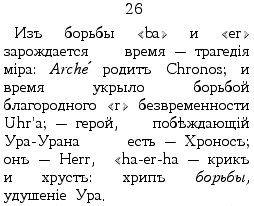
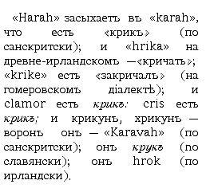
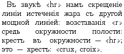
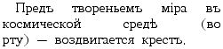

Glossolalia (Section 26)

Out of the brawl between "ha" and "er" is born time [vremya] -- the tragedy of the world: Arché gives birth to Chronos; and in the brawl time sheltered the nobleborn "r" of the timelessness of Uhr; -- the hero, victorious over Ur-Uranus is -- Chronos; he is -- Herr, "ha-er-ha" -- a scream and a crunch: the screeching of the brawl, the suffocation of Ur.

"Harah" withers into "karah," that is "cry" (in Sanskrit); and "hrika" in Old Irish is -- "to cry" ["krichat']; "krike" is "he cried out" [on zakrichal] (in the Homeric dialect); and clamor is a cry [krik]: cris is a cry [krik]; and a cryer [krikun], cruncher [xrikun] -- the crow is -- "karava" (in Sanskrit); crow is kruk (in Slavic): it is hrok (in Irish).

In the sound "hr" we have the intersection of a line of heat flowing out with another powerful line: the insurrection of "r" inside the circumference of the orifice; the cross [krest] within the circumference is -- "hr"; this is -- the cross [Ukrainian chrest]; "crux, croix."

Prior to the creation of the world in the cosmic milieu (in the mouth) -- a cross is erected.